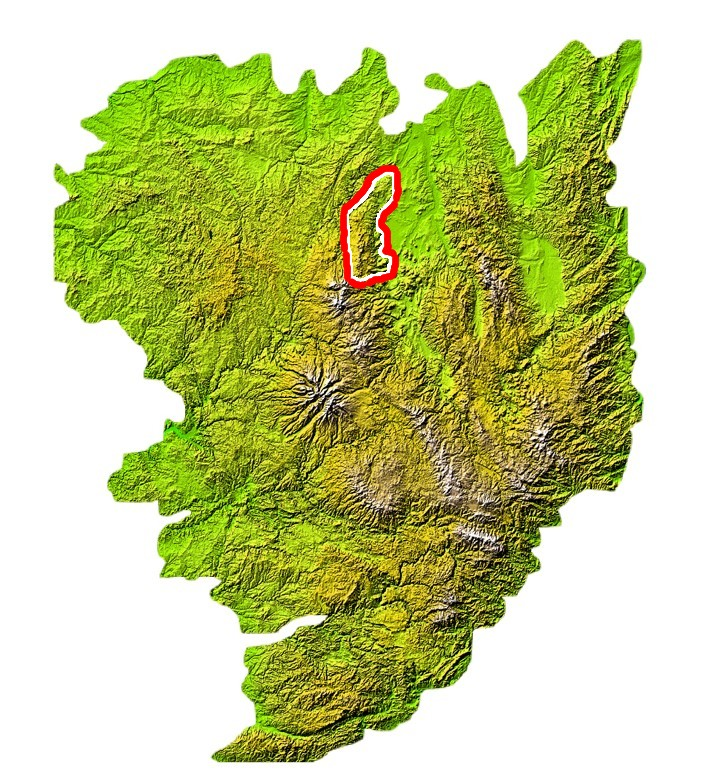
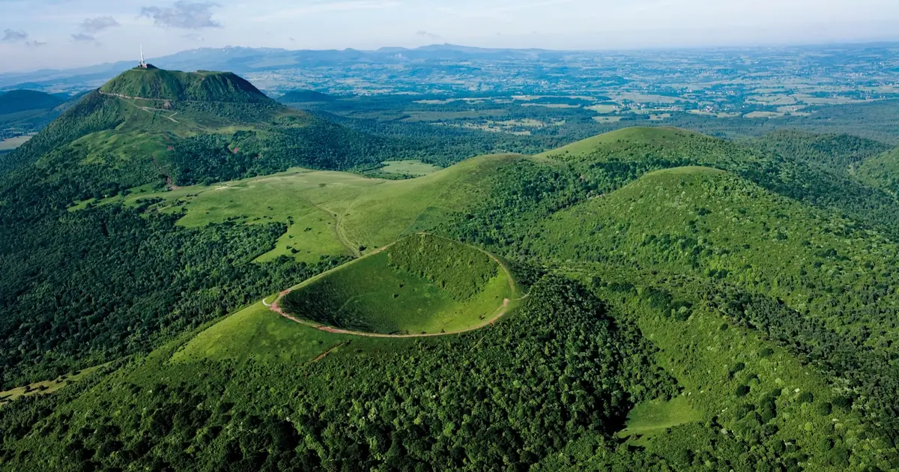
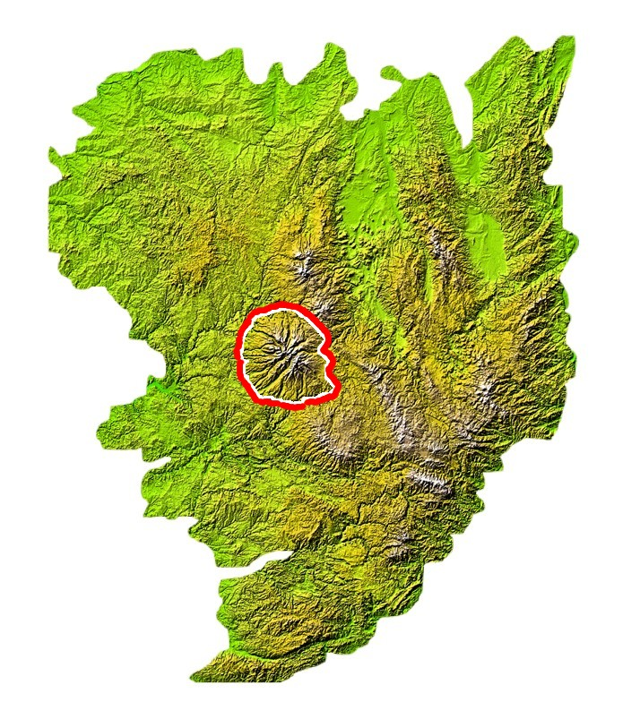

Séance 10 - L’impact du magmatisme I : géodynamique terrestre
Le magmatisme façonne la surface terrestre et conditionne les processus mantelliques

Les observables à grande échelle : volcanisme

Structure globale de la Terre : récapitulatif

Structure globale de la Terre : modélisation
.jpg)
Les forces du système convectif et de la tectonique de plaques

Différents types de rifting

Les isothermes d’une zone de rift

Les points chauds : forces locales qui évacuent l’excédent de chaleur du manteau

Premier cas d’étude : la subduction des Andes

Les rides asismiques peuvent favoriser une subduction peu inclinée

Lacunes volcaniques dans les Andes
Subduction d’une croûte océanique normale

Subduction d’une plaque rendue plus flottante par une ride asismique

À noter — rupture de la plaque subduite (slab break-off) : une coupe peut suggérer un détachement en profondeur. Sous certaines conditions, les contraintes d’extension amincissent puis rompent la lithosphère subduite ; sa partie profonde se détache et poursuit sa descente. Le processus concerne la lithosphère subduite, et non la seule croûte océanique.
Pour explorer la sismicité mondiale : Seismic Explorer.
La dorsale de Reykjanes au sud de l’Islande

Troisième cas d’étude : le volcanisme du Massif central

Contexte du volcanisme du Massif central

Le schéma propose deux étapes : l’extension ouvre les grabens du Massif central (rift passif, de 28 à 14 Ma). Puis le délaminage de la racine lithosphérique alpine pourrait entraîner un flux asthénosphérique vers la région. La remontée de manteau chaud sous les grabens favoriserait alors la fusion partielle et le volcanisme (rift actif, depuis environ 14 Ma). Ce modèle associe extension et remontée mantellique de type panache ; leurs rôles respectifs restent discutés.
Contexte d’extension



Délamination crustale et anomalie asténosphérique
